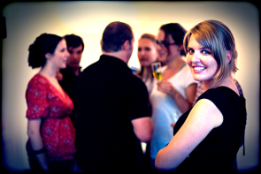
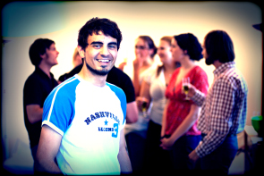
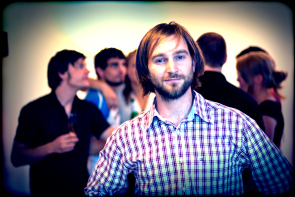
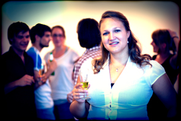
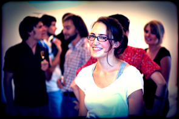

Die Truppe
HELL/WARM
Mascha - Claudia Haigermoser

Lukas - Thomas Kempf

Stimme/Fahrer/Vater - Ronny Barner

Mutter - Ina Grimmer

Sybille - Maria Milisavljevic

ANNAS FEST
- Anna - Ina Grimmer
- Ralph - Stefan Wilhelm
- Friedrich - Thomas Kempf
- Britta - Stella Voutta
- Peter - Ronny Barner
- Sara - Claudia Haigermoser
- Tim - Michael Vollmann
THEATERWERKSTATT WINTER 2006
- Ina Grimmer
- Franziska Strasser
- Stefan Wilhelm
- Thomas Kempf
ROMEO + JULIA
- Romeo - Michael Vollmann
- Julia - Kim Rohrer
- Mercutio - Thomas Kempf
- Benvolio - Oliver Schneider
- Graf Capulet - Stefan Wilhelm
- Gräfin Capulet - Franziska Strasser
- Tybalt - Alan Gazolajew
- Graf Paris - Johannes Regner
- Zofe - Anna Przygodda
- Lorenzo - Konrad Krukowski
- Apotheker - Ronny Barner
WEIT WEG
- Mark - Michael Vollmann
- Ben - Thomas Kempf
- Lynn - Kim Rohrer
- Ellen - Marie Claussen
- Debbie - Anna Przygodda
- Matt - Gregor Kopp
- Typ - Ronny Barner
- Junge - Tobias Koch
- Mädel - Katharina Tvrdinic
DREI SCHWESTERN
- Olga - Claudia Haigermoser
- Mascha - Franziska Strasser
- Irina - Anja Christina Lohmann
- Andrej - Konrad Krukowski
- Kulygin - Josef Seibold
- Werschinin - Alexander von der Goltz
- Tusenbach - Thomas Kempf
- Soljonyj - Florian Brummer
- Tschebutykin - Ronny Barner
- Fedotik - Kevin Kemp
- Rode - Colin Bertrand
- Fedotik - Andreas Lochbihler
- Anfissa - Ina Grimmer